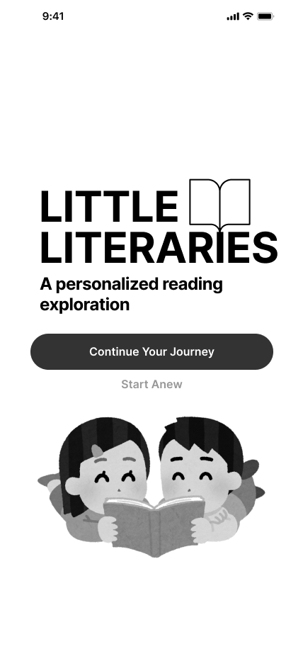
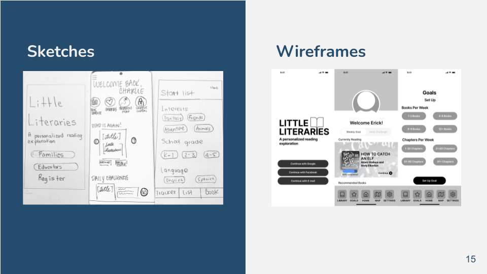
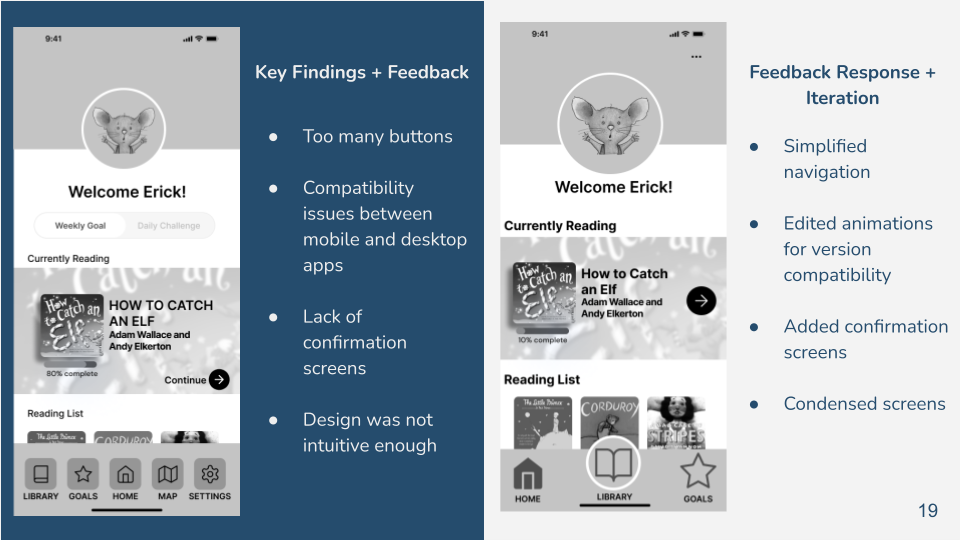

Case Study Little Literaries
Goal: Little Literaries was a mobile application created to target students in k-5 and encourage them to read while at home.
Timeline: This project lasted approximately 2-3 weeks to complete

The Process
After we gathered all the information of the interviews, we found out that many parents that struggle financially, have a hard time finding adequate reading resources for their children at home. We created this user journey having our users in mind, to empathize and find the best solution. This is the process of how our user Aria found out about Little Literaries.
User Research & Findings
After our user research these are some main pain points we found out our users had: -Lacks extra time and money. -Concerns about reading progress. -Difficulty encouraging children to read.
Ideation Design
When developing the Little Literaries app, we each sketched out the functions we wanted to incorporate in the app to best help our users. We then choose from each of our sketches as shown above and created wireframes for each screen keeping our users in mind.
Usability Testing & Findings
Key findings that we found during our usability testing was that the application had too many buttons and it was not child-friendly. To best adapt the needs of our main users of the application, children, we iterated and developed a simplified navigation and added animations to encourage children to read at home.
Interactive Prototype

This is the interactive prototype of Little Literaries. Here you can see the navigation bar that consists of three components, the home, library and goals. It is easily accessible for both parents and children. It helps parents track how many books their children read and how they are progressing in their reading skills, all while encouraging children to read at home.
Complete Case Study
If you want to learn more about this project please feel free to contact me! Little Literaries is an e-library application aimed to provide K-5th grade students with accessible reading books at home, and helping parents keep track of their child’s reading progress.